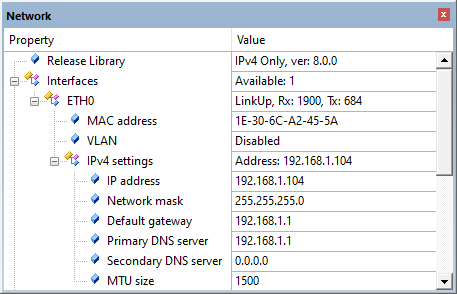

Network library hierarchy
BSD sockets represent the Session layer in the OSI model. They are using the native TCP and UDP sockets of the Network library. The debug messages from the BSD module are very compact and provide as less information as possible. You can see how the BSD functions are called and their return values. Most of the time this is sufficient. If not, enable the underlying layers as well.
TCP, UDP sockets implement the TCP/UDP protocol, which is then used by BSD sockets. Their debug messages show the details of the TCP/UDP protocol in the communication stream. Information about error recovery, flow control and re-transmissions is displayed. In case the BSD socket communication fails, this can point to the underlying problem.
The IPv4, IPv6 network layer adds the concept of routing above the Data Link Layer. When data arrives at the network layer, the source and destination addresses are examined to determine if the data has reached the final destination. If this is true, the data is formatted into packets and delivered up to the TCP/UDP layer. The IP layer debug messages show details about IP addresses, routing and packet fragmentation and reassembly (if this is used in communication).
On the Ethernet, WiFi, PPP and SLIP layer, bits are packed into data frames and physical addressing is managed (for example using MAC addresses).
Network library hierarchy
Best practices
This section shows some of the best practices that are used by the developers of the network stack when troubleshooting communication issues. Following them should usually quickly help identifying the underlying problem of a non-working project.
- Note
- The following assumes that you are using Event Recorder based debugging.
Check the Ethernet interface
shows you static information about the operation of a software component. In the µVision debugger, go to Debug -> View -> Watch windows -> Network to see the status information of the network library:

Component Viewer for the Network library
This indicates the following:
| Property | Description |
| ETH interface | Shows physical connection problems; Link-Up indicates a stable connection |
| IP Address | Shows DHCP address assignment problems; for an unassigned IP address the entry reads 0.0.0.0 |
The Ethernet interface is operational when the link-up state is indicated and a DHCP address is assigned. When using a static IP address, DHCP assignment is skipped. Thus, only the link-up state is required.
If the DHCP client is enabled, but fails to receive an IP address from the DHCP server, use DHCP events to follow the DHCP assignment process and possibly identify the root-cause of the problem. Usually, DHCP assignment fails when the DHCP server is not available or is not operational in the local network.
Verify Socket Communication
Event Recorder shows the sequence of events for the connection. The following example shows the BSD event log of a successful communication:
10 13.11487039 NetBSD SocketAllocated sock=1 type=
SOCK_STREAM11 13.11487544 NetBSD ConnectSocket sock=1
12 13.14889442 NetBSD CbfuncTcpEvent sock=1 event=Established
13 13.14891358 NetBSD ConnectStreamSuccess sock=1
14 18.14885683 NetBSD Closesocket sock=1
When the BSD socket is connected, the state of the underlying TCP socket is shown in the viewer as well:
TCP sockets in Component Viewer
This shows the remote IP address and port number, as well as the local port number, the value for the timeout timer and the active TCP socket options. This is valuable information in addition to the events shown in Event Recorder.
The following example shows the BSD event log in case a target cannot be reached:
3 7.41687549 NetBSD SocketAllocated sock=1 type=
SOCK_STREAM4 7.41688068 NetBSD ConnectSocket sock=1
5 22.41490458 NetBSD CbfuncTcpEvent sock=1 event=Aborted
6 22.41491838 NetBSD ConnectStreamTimeout sock=1
7 27.41486937 NetBSD Closesocket sock=1
After a timeout, BSD connect fails with the log "ConnectStreamTimeout". From the timestamp records, you can observe that this happened 15 seconds later. During this time, a TCP module has made several retries to establish a connection with the remote host, but finally gave up.
Possible reasons for the connection to fail:
- a remote host is not reachable (either not running or switched off).
- a firewall blocks the outbound connection.
- a firewall blocks the inbound connection.
- a local port number used for communication is reserved for other means in the communication equipment (ie. modem/router). For example, the TCP port 49152 is sometimes reserved by the Internet provider for remote management of the communication device. In general, communication using reserved ports is not possible.
After a BSD connect() is called and before the function completes, many events are generated from the TCP socket, indicating how the TCP is performing the connect. Here is a log of successful connect with BSD and TCP events enabled:
6 13.41688149 NetBSD ConnectSocket sock=1
7 13.41688457 NetTCP ConnectSocket sock=1 loc_port=0
8 13.41688673 NetTCP ShowNetAddressIp4 ip=64.233.184.206 port=8883
9 13.41688979 NetTCP ConnectLocalPortAssigned loc_port=49152
10 13.41689299 NetTCP ShowRttVariables rto=4000 sa=0 sv=40
11 13.41689612 NetTCP SendControl sock=1
12 13.41690353 NetTCP ShowFrameHeader dport=8883 sport=49152 seq=0x1B35487F ack=0x00000000 flags=0x02 win=4320 cksum=0x0000
13 13.45960305 NetTCP ReceiveFrame len=24 ver=IPv4
14 13.45960505 NetTCP ShowFrameHeader dport=49152 sport=8883 seq=0x22F3D202 ack=0x1B354880 flags=0x12 win=42780 cksum=0xF859
15 13.45961008 NetTCP MappedToSocket sock=1 state=SYN_SENT
16 13.45961235 NetTCP ParseHeaderOptions opt_len=4
17 13.45961427 NetTCP OptionMss mss=1380
18 13.45961622 NetTCP ShowCongestionVariables cwnd=4140 ssth=65535
19 13.45961786 NetTCP ShowSendWindow send_win=42780
20 13.45961948 NetTCP NextState state=ESTABLISHED
21 13.45962121 NetTCP SendControl sock=1
22 13.4596284 NetTCP ShowFrameHeader dport=8883 sport=49152 seq=0x1B354880 ack=0x22F3D203 flags=0x10 win=4320 cksum=0x0000
23 13.45964949 NetBSD CbfuncTcpEvent sock=1 event=Established
24 13.45966893 NetBSD ConnectStreamSuccess sock=1
To trace all events that are relevant for the BSD connect, also enable IPv4 and ETH events. In this case, the number of generated events is much larger. Tracking the Event Recorder log becomes more difficult:
48 7.41688149 NetBSD ConnectSocket sock=1
49 7.41688458 NetTCP ConnectSocket sock=1 loc_port=0
50 7.41688674 NetTCP ShowNetAddressIp4 ip=64.233.184.206 port=8883
51 7.41688979 NetTCP ConnectLocalPortAssigned loc_port=49152
52 7.416893 NetTCP ShowRttVariables rto=4000 sa=0 sv=40
53 7.41689613 NetTCP SendControl sock=1
54 7.41690354 NetTCP ShowFrameHeader dport=8883 sport=49152 seq=0x00828ADD ack=0x00000000 flags=0x02 win=4320 cksum=0x0000
55 7.41690848 NetIP4 SendFrame proto=TCP len=24
56 7.41691169 NetIP4 ShowFrameHeader dst=64.233.184.206 src=192.168.3.49 proto=TCP id=0x0002 frag=0x4000 len=44
57 7.41691642 NetETH SendFrame len=44 ver=IPv4
58 7.4169189 NetARP CacheFind ip=64.233.184.206
59 7.41692122 NetARP UsingGateway gw=192.168.3.1
60 7.41692342 NetARP EntryFound entry=1
61 7.4169255 NetETH ShowFrameHeader dst=C0-A0-BB-77-4F-B8 src=1E-30-6C-A2-45-5A proto=IP4
62 7.41692896 NetETH OutputLowLevel len=58
63 7.4508298 NetETH ReceiveFrame len=60
64 7.45083195 NetETH ShowFrameHeader dst=1E-30-6C-A2-45-5A src=C0-A0-BB-77-4F-B8 proto=IP4
65 7.45083569 NetIP4 ReceiveFrame len=46
66 7.45083735 NetIP4 ShowFrameHeader dst=192.168.3.49 src=64.233.184.206 proto=TCP id=0x1AB4 frag=0x0000 len=44
67 7.45084473 NetTCP ReceiveFrame len=24 ver=IPv4
68 7.45084669 NetTCP ShowFrameHeader dport=49152 sport=8883 seq=0x3E8D5ACA ack=0x00828ADE flags=0x12 win=42780 cksum=0x2C4D
69 7.45085173 NetTCP MappedToSocket sock=1 state=SYN_SENT
70 7.45085574 NetTCP ParseHeaderOptions opt_len=4
71 7.45085765 NetTCP OptionMss mss=1380
72 7.45085961 NetTCP ShowCongestionVariables cwnd=4140 ssth=65535
73 7.45086124 NetTCP ShowSendWindow send_win=42780
74 7.45086286 NetTCP NextState state=ESTABLISHED
75 7.4508646 NetTCP SendControl sock=1
76 7.45087179 NetTCP ShowFrameHeader dport=8883 sport=49152 seq=0x00828ADE ack=0x3E8D5ACB flags=0x10 win=4320 cksum=0x0000
77 7.45087673 NetIP4 SendFrame proto=TCP len=20
78 7.45087994 NetIP4 ShowFrameHeader dst=64.233.184.206 src=192.168.3.49 proto=TCP id=0x0003 frag=0x4000 len=40
79 7.45088467 NetETH SendFrame len=40 ver=IPv4
80 7.45088715 NetARP CacheFind ip=64.233.184.206
81 7.45088947 NetARP UsingGateway gw=192.168.3.1
82 7.45089167 NetARP EntryFound entry=1
83 7.45089374 NetETH ShowFrameHeader dst=C0-A0-BB-77-4F-B8 src=1E-30-6C-A2-45-5A proto=IP4
84 7.4508972 NetETH OutputLowLevel len=54
85 7.45090824 NetBSD CbfuncTcpEvent sock=1 event=Established
86 7.45092768 NetBSD ConnectStreamSuccess sock=1
This is what happens when the BSD connect() function is called:
- The TCP connect process is started.
- The current local port is 0. The system allocates port 49152 from the dynamic ports range for the local port.
- The TCP layer creates a TCP header and sends the control frame with a SYN flag set to the IPv4 network.
- The IPv4 network adds the IPv4 header with the source and destination IP address and sends the frame to the ETH interface.
- The ETH interface checks the ARP cache if the destination IP address 64.233.184.206 has already been resolved, (the target IP address is not local, so the gateway is selected to forward the packet to).
- The MAC address of a gateway is resolved and the Ethernet frame is sent to the gateway.
- After a small delay, an Ethernet frame is received from the gateway (MAC=C0-A0-BB-77-4F-B8).
- The IPv4 network shows that it is originating from IP address 64.233.184.206; protocol is TCP.
- TCP shows the TCP header information and maps this frame to the existing TCP socket 1.
- As the control frame has the SYN+ACK flags set, TCP generates an ACK response and transits to ESTABLISHED state.
- The outgoing TCP ACK frame traverses IPv4 and ETH layers and is sent to the gateway.
- TCP also generates an event for the BSD socket 1, which is blocked and waiting to resume.
- BSD socket 1 resumes with an event "ConnectStreamSuccess" (this signals that the BSD socket 1 is now connected).
Verify Secure Communication
If the BSD socket has connected successfully to the IoT Cloud, but the TLS handshake has failed, no secure connection will be established. An established network connection is indicated with the NetBSD event "ConnectStreamSuccess" in the Event Recorder log.
Usually, Mbed TLS is used as the security layer for MDK-Middleware. To successfully debug the Mbed TLS security layer, read the related MbedTLS documentation.
Typical errors in the security layer are:
- heap size too small and Mbed TLS cannot allocate enough memory for the requested operation.
- thread stack size of the thread running Mbed TLS is too small and thus stack overflows are detected. This leads to sporadic crashes of the IoT application.
- invalid credentials or security certificates are used so that the certificate verification fails during the TLS handshake.